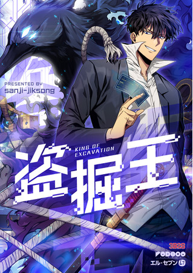
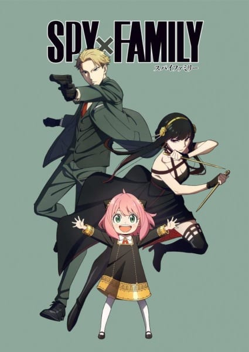

Aqui estão alguns dos mangás (manhwas, webtoons, novels, etc) que eu tenho lido e recomendo.
Who Made Me A Princess

Who Made Me a Princess segue a jornada de Athanasia de Alger Obelia, uma garota sul-coreana que reencarnou na história fictícia, The Lovely Princess, como a princesa abandonada do Império Obelian.
It Seems Like I Fell Into A Reverse Harem Game

Quando abri os olhos, estava em um mundo diferente. Tornei-me a princesa vilã do jogo que todos temem. Desnecessário dizer... homens totalmente nus que eu nem sabia que estavam vindo direto e esquerdo para mim! "Estas com frio? Devo te abraçar?” "Cinco? Ainda não é o suficiente?” Sério, e essa situação? E como diabos você pode sair desse jogo horrível?!
The Villainess Is A Marionette
The Villainess Is A Marionette é uma Web Novel coreana mais tarde convertida em Manhwa cobrindo os gêneros Drama, Fantasia e Romance. Acordei como Kayena Hill, a vilã do romance, elogiada como a maior beldade do império. Quem diria que a história dela chamaria minha atenção porque eu era ela na minha vida passada?
Remarried Empress

Navier Ellie Trovi era uma imperatriz perfeita em todos os sentidos – inteligente, corajosa e socialmente adepta. Ela era gentil com seus súditos e dedicada ao marido. Navier estava perfeitamente satisfeita em viver o resto de seus dias como a sábia imperatriz do Império do Oriente. Isto é, até que seu marido trouxe para casa uma amante e exigiu o divórcio. “Aceito este divórcio… E solicito a aprovação do meu novo casamento.” Em uma reviravolta chocante, Navier se casa novamente com outro imperador e mantém seu título e sonho de infância como imperatriz. Mas como tudo se desenrolou?
Another Typical Fantasy Romance
Depois que os deuses a deixaram no mundo de seu romance de fantasia favorito, Lithera percebeu rapidamente que felizes para sempre nunca eram fáceis de obter. Com outra chance de felicidade, ela agora está determinada a evitar os erros de sua vida anterior, começando por conhecer o doce e carinhoso Grão-Duque com quem passou anos trocando cartas… Outra típica protagonista feminina, com outro típico duque, prometida para o casamento. Essa história seguirá o caminho típico que todos esperamos?
Once Again, Into The Light
Fui falsamente acusada de tentar matar minha irmã mais nova, que era venerada como uma santa. Não havia uma única pessoa que acreditasse em mim, nem havia uma pessoa que me defendesse. Nem mesmo minha família relacionada ao sangue. Eu tinha 14 anos e era inverno. Eu, que era a Quarta Princesa de Edenbell, fui miseravelmente decapitada na frente das massas. Após o fim da minha morte, eu acordei e o que veio foi… “Meu bebê, minha preciosa irmã mais nova.” Com um sorriso delicioso, ele segurou meus dedinhos. Aquele gesto caloroso, calor e toque. Ele me cantou uma canção de ninar enquanto me segurava gentilmente e balançava.
Daughter Of The Archmage
Mabel foi ridicularizada a vida toda por sua habilidade mágica inexistente, mas quando ela finalmente conhece seu verdadeiro pai, é a arquimago todo-poderosa, Raquiel! Forçado por um pacto imperial a deixá-la ir há muito tempo, ele agora pode recebê-la em sua casa, com seu mordomo meio lobo, três irmãs ninfas, um halfling raposa e um discípulo gentil para vigiá-la. Mas segredos obscuros de seu passado ameaçam alcançá-los. Será que sua magia será suficiente para protegê-la? Ela poderia mesmo entrar em um poder próprio?
Youngest Princess
A arquimaga que governava um reino mágico. Um dia, ela renasceu como a filha mais nova do império! “Vou apenas brincar e fingir ser um bebê. ... Mas vocês não acham que vocês gostam um pouco demais de mim?” Eles não vão deixá-la sozinha. A princesa mais nova está cansada hoje também.
I Became The Male Lead's Adopted Daughter


“Vou adotar uma criança”. A decisão impulsiva de Duke Ferio Volleoti chocou a todos na mansão. Ele não apenas fez dela sua filha, mas também lhe deu o nome de uma ‘besta’ que apenas membros diretos da linhagem poderiam receber. “Mesmo enquanto você respira agora, estou ganhando dinheiro.” “É confiança, não arrogância.” “Meu rosto realmente tem suas vantagens.” O pai mais arrogante do mundo inteiro, e “Eu amo mais músculos. Vamos ficar musculosos.” “Mostre-me seus músculos da coxa! Sua bunda seria ainda melhor!” “Você não passa de uma flor se tiver uma personalidade calma…” sua filha corrompida(?). E… “Vou dar a Sua Excelência a informação que ele mais quer.” "Informações que eu mais quero, você diz..." "Você não vai se arrepender." …Uma madrasta(?) com um segredo estranho também.
My Three Tyrant Brothers
Todos os membros da família imperial Ascania são amaldiçoados a morrer nas mãos de um ente querido, uma maldição só quebrada pelo nascimento de uma menina na linhagem. Então, quando uma jovem escrava com o revelador, Os olhos de Ascania que mudam de cor são descobertos, ela é declarada Princesa Chloe, a irmã mais nova dos três príncipes. Ela está animada por finalmente ter uma família, mas seus novos irmãos parecem um pouco estranhos… Eles sempre tiveram que ser frios e insensíveis para sua própria proteção, mas a chegada de Chloe plantará a semente da mudança em seus corações?
Tomb Raider King
Tumbas misteriosas apareceram em todo o mundo um dia, cada uma contendo uma relíquia que concede ao seu dono habilidades sobrenaturais. Jooheon Suh é um explorador de túmulos, escavador e invasor. Traído por seu empregador, ele está prestes a morrer nas mãos de uma nova e poderosa relíquia quando de repente se encontra 15 anos no passado, antes que qualquer relíquia ou túmulo fizesse sua estréia. Impulsionado por sentimentos de vingança, como Jooheon usará seu conhecimento do futuro para se tornar o Tomb Raider King?
The Strongest God King
Esta é uma era cheia de Qi, também é um mundo povoado de cultivadores. O jovem Wu Fu renasceu da reencarnação, só que quando alguém olhava em seus olhos, eles estavam estranhamente pacíficos. Este é um novo caminho para o pico! Tudo o que preciso fazer é levantar a espada e eliminar todos os inimigos da última geração!
Child Of The Light

Zhang Gong decide aprender magia de luz, alguns mágicos mostram interesse e eventualmente se torna o lendário Grande Mago. Enquanto tenta acabar com a separação leste e oeste do continente para unir todas as diferentes raças, ele se torna o Filho da Luz de todas as raças.
I Raised The Beast Well
Blondina está vivendo uma história real da Cinderela. Depois de crescer pobre e passar por uma infância difícil, ela descobre que é uma princesa do império Ates. No entanto, seu pai e meio-irmãos distantes dão-lhe o ombro frio quando ela se muda para o palácio, e Blondina deve manter um perfil discreto. Isso tudo muda quando ela faz amizade com Amon, uma criatura parecida com um gato com intenções misteriosas. Durante anos, criaturas como Amon e humanos lutaram para viver em harmonia. A amizade de Blondina e Amon pode trazer paz, ou irá aprofundar a divisão entre seu povo?
I Tamed A Tyrant And Ran Away
Deus me deu a chance de viver minha vida novamente. Antes do meu renascimento, passei
os últimos 400 anos como a Espada Imperial de Keira, uma espada mágica literal que emana
do meu corpo amaldiçoado. E assim, depois de séculos de minha alma aprisionada e forçada
a matar inúmeras pessoas contra minha vontade, jurei destruir o Império que me torturou
tão implacavelmente.
Encontrei um jovem príncipe genial do Império e tornei-me seu professor.
Eu o ensinei a se tornar um tirano e pedi o Império.
"Eu vou fazer o que a senhora quer."
Ele conquistou todo o Império para mim e eu escapei.
“Eu vim para te levar, Charlize Ronan.” Dylan se tornou um tirano perfeito e me procurou por
todo o império.
“Você me domou, então por que você fugiu?”
SpyXFamily
O mestre espião de codinome "Twilight" passou seus dias em missões secretas, tudo pelo sonho de um mundo melhor. Mas um dia, ele recebe uma nova ordem particularmente difícil da central de comando. Para sua missão, ele deve formar uma família temporária e começar uma nova vida?! Uma comédia de ação sobre uma família única!
Omniscient Reader's Viewpoint
“Esse é um desenrolar que eu já conheço”. No momento em que pensei isso, o mundo foi destruído e
um novo universo surgiu. A nova vida de um leitor comum começa no mundo de uma novel, a novel que
só ele terminou.
Dokja era um trabalhador de escritório comum cujo único interesse era ler seu romance favorito na
web 'Três maneiras de sobreviver ao apocalipse'. Mas quando o romance de repente se torna realidade,
ele é a única pessoa que sabe como o mundo vai acabar. Armado com essa percepção, Dokja usa sua compreensão
para mudar o curso da história e do mundo, como ele o conhece.
Solo Leveling
10 anos atrás, depois que o “Portão” que conectou o mundo real com o mundo dos monstros foi aberto, algumas pessoas comuns receberam o poder de caçar monstros dentro do Portão. Eles são conhecidos como “Caçadores”. No entanto, nem todos os caçadores são poderosos. Meu nome é Sung Jin-Woo, um caçador de Rank E. Eu sou alguém que tem que arriscar sua vida no mais baixo dos calabouços, o “mundo mais fraco”. Não tendo nenhuma habilidade para mostrar, eu mal ganhei o dinheiro necessário para minha sobrevivência lutando em masmorras de baixo nível… pelo menos até eu encontrar uma masmorra escondida com a dificuldade mais difícil dentro das masmorras Rank D! No final, quando eu estava aceitando a morte, de repente eu recebi um poder estranho, um registro de busca que só eu podia ver, um segredo para subir de nível que só eu sei! Se eu treinasse de acordo com minhas missões e monstros caçados, meu nível subiria.